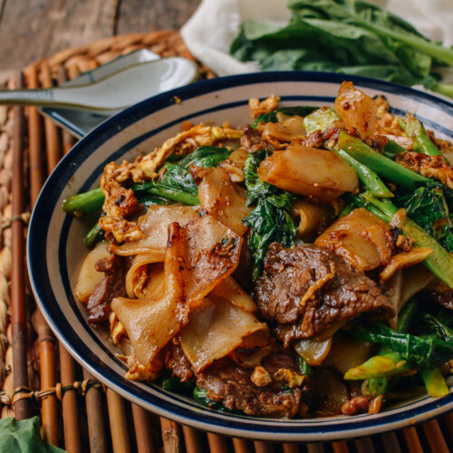

Home
Pad See Ew

Pad See Ew is a Thai Stir Fried noodle dish that I am cooking for dinner tonight. I hope it turns out well.
Ingredients
Sauce
- 2 tsp dark soy sauce
- 1 1/2 tbsp oyster sauce
- 1 tbsp light soy sauce
- 2 tsp white vinegar
- 2 tsp sugar
Stir Fry
- 3 tbsp peanut or vegetable oil
- 2 cloves garlic cloves, very finely chopped
- 1 cup / 150g / 5oz chicken thighs
- 1 large egg
- 4 stems Chinese broccoli